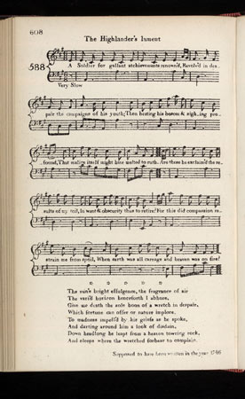

The Highlander's Lament
Lamentations du Highlander
Aftermath of Culloden
from James Johnson's "Scots Musical Museum" N° 588 Volume 6, Page 608, 1803and Hogg's "Jacobite Relics" , volume 2, N°87, page 170, 1821
Tune - Mélodie
Version Patrick McDonald N°186, first published 1784 (pentatonic)
Variant
(Version Scots Musical Museum)
Sequenced by Christian Souchon

|
To the tune:
" Johnson has included a note at the bottom of the page, which supposes that this song was written in 1746. A number of people believe it was written directly after the Battle of Culloden (1746). Unfortunately, it will never be known if this is in fact true. Prior to the 'Museum', the accompanying melody appeared in Niel Gow's 'Fourth Collection of Strathspey Reels, &c.' (1800) under the title, 'Cairngorm Mountain'. Gow described the tune as 'a very old Gaelic melody'. An almost identical set, which was described as an Irish air, appeared in the Rev. Patrick McDonald 's 'Collection of Highland Vocal Airs' (1784). For the purposes of the 'Museum', however, Johnson opted for Gow's version." Source: National Burns Collection Hogg writes in a note to a version of this song published in the 2nd volume of his "Jacobite Relics, in 1821, with two additional verses : "Has often been published, both song and air, with the exception of the stanzas reprobating some Highland chiefs. The curses are doubtlessly pronounced on the two chiefs of Skye who departed so woefully from the tenets and loyalty of their fathers. The song is likely to have been made by some of the sennachies of Appin, the old inveterate foe of the Campbells, whose prevailing power crushed and finally ruined him." |
A propos de la mélodie:
" Johnson indique en bas de page qu'il suppose que ce chant fut écrit en 1746. Nombreux sont ceux qui pensent qu'il fut composé dès après la bataille de Culloden (1746). On ne pourra, hélas, jamais l'établir avec certitude. Avant le "Musée", le "Quatrième Recueil de strathpeys, reels et autres danses " (1800) de Niel Gow publiait cette mélodie sous le titre "le Mont Cairngorm". Gow parlait à son sujet d'"un très ancien air gaélique". Un thème presque identique, intitulé "air irlandais" apparaît dans la "Collection of Highland Vocal Airs" (1784) du Révérend Patrick McDonald . C'est cependant la version de Gow qui fut retenue par Johnson. " Source: National Burns Collection Hogg note à propos de sa version de ce chant, publiée dans le 2éme volume de ses "Reliques Jacobites" en 1821 et qui comporte deux couplets de plus : "Ce chant a été souvent publié, paroles et musique, à l'exception des couplets qui attaquent certains chefs de clans. Les malédictions visent sans aucun doute les deux chefs de Skye dont la défection, contraire aux principes de loyauté de leurs pères, fut si lourde de conséquences. Le chant doit avoir été composé par l'un des "sennachies" (chroniqueurs) du clan Stewart d'Appin, ennemis de toujours des Campbell, dont la supériorité l'écrasa jusqu'à causer sa ruine." |

|
THE HIGHLANDER'S LAMENT
1. A Soldier for gallant achievements renown'd, Revolv'd in despair the campaigns of his youth; Then beating his bosom and sighing profound, That malice itself might have melted to ruth. " Are these" he exclaim'd "the results of my toil, " In want and obscurity thus to retire? " For this did compassion restrain me from spoil, " When earth was all carnage and heaven was on fire?' 2. " My country is ravag'd, my kinsmen are slain, " My prince is in exile, and treated with scorn, " My chief is no more— he hath suffer'd in vain— " And why should I live on the mountain forlorn ? " O woe to McConal, the selfish, the proud, " Disgrace of a name for its loyalty fam'd! " The curses of heaven shall fall on the head " Of Callum and Torquil, no more to be nam'd. 3. " For had they but join'd with the just and the brave, " The Campbell had fallen, and Scotland been free; " That traitor, of vile usurpation the slave, " The foe of the Highlands, of mine, and of me. " The great they are gone, the destroyer is come, " The smoke of Lochaber has redden'd the sky. " The war-note of freedom for ever is dumb; " For that have I stood, and with that I will die. 4. " The sun's bright effluence, the fragrance of air " The vast horizon henceforth I abhore " Give me death the ende hoos of a wretch in dispair " Which fortune can offer or nature implore." To madness impell'd by her griefe as he spoke And darting around him a look of disdain Down headlong he leapt from a high towring rock And sleeps where the wretched forbear to complain. In italics, the additional verses from the "Jacobite Relics" |
LAMENTATIONS D'UN HIGHLANDER
1. Un soldat fameux pour ses vaillants exploits, Revoyait, déçu, ses hauts faits d'autrefois; Il, battait sa coulpe avec de tels soupirs, Que le diable lui-même aurait pu se maudire. 'Voilà, disait-il, le fruit de mes efforts: L'obscure indigence en attendant la mort! La compassion m'interdisait de piller, Quand la terre saignait, que les cieux brûlaient! 2. Mes parents égorgés, mon pays détruit, Mon prince banni et en butte au mépris. Je n'ai plus de chef - il a souffert en vain. A quoi bon vivre seul et dans ces monts, au loin? Honte à toi, Connall, égoïste arrogant, Qui déshonoras un honorable clan! Puisse du Ciel tomber la malédiction Sur Malcolm et Torquil, deux ignobles noms! 3. S'ils avaient rejoint le camp de l'équité, Campbell eût perdu, l'Ecosse triomphé, Ce traître , ce valet de l'usurpation L'ennemi des Highlands et de la nation! Les héros sont morts, voici le destructeur. Lochaber s'empourpre d'horribles lueurs Et la cornemuse guerrière s'est tue. Privé d'idéal, il faut que je me tue. 4. L'éclat du soleil, la fragrance de l'air Le vaste horizon désormais m'indiffèrent: Un maudit n'a plus qu'un refuge, la mort Que veut la nature et qu'inflige le sort.' La douleur égare tant le malheureux Qu'il jette alentour un regard dédaigneux Et se précipite du haut d'un ravin. Il repose où les gueux oublient leur chagrin. In italiques, les couplets supplémentaires des "Jacobite Relics" (Trad. Ch. Souchon (c) 2010) |